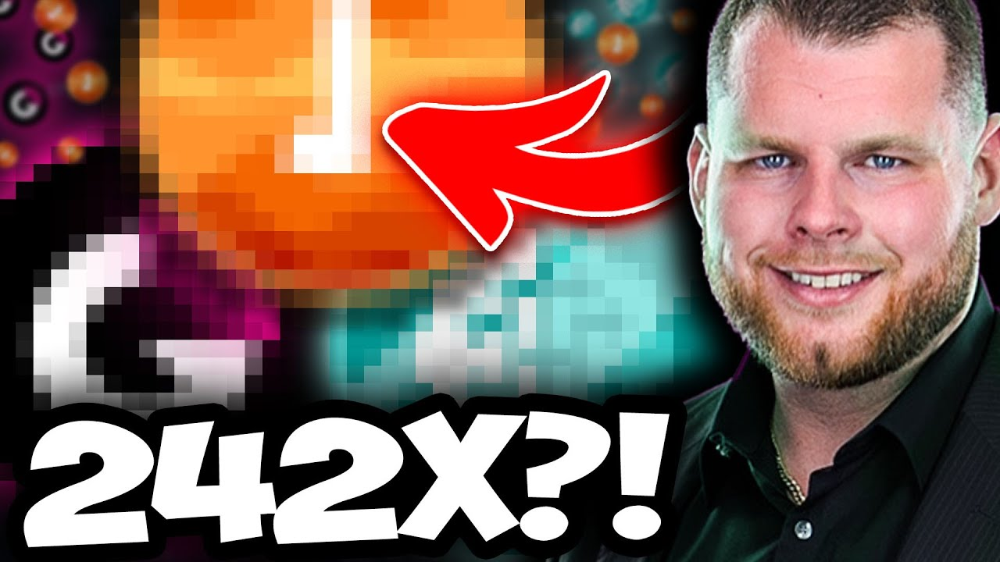
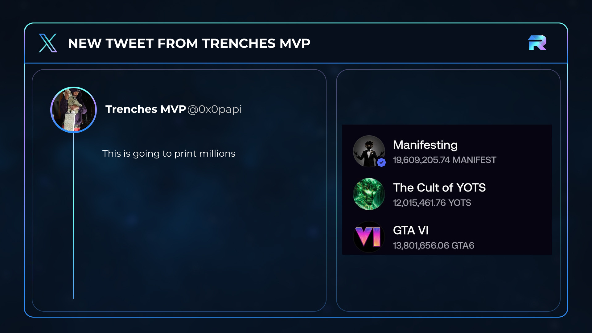
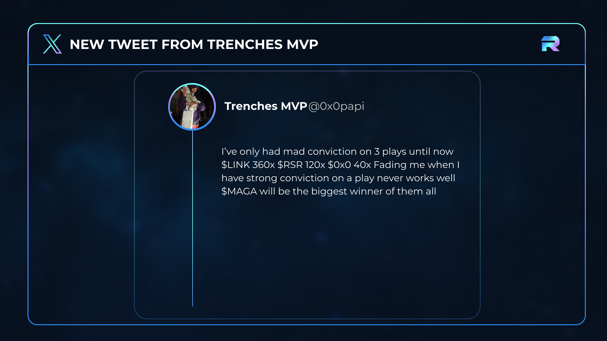
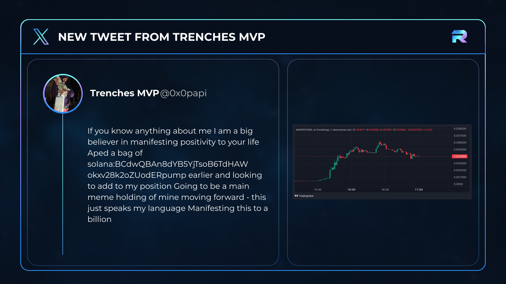
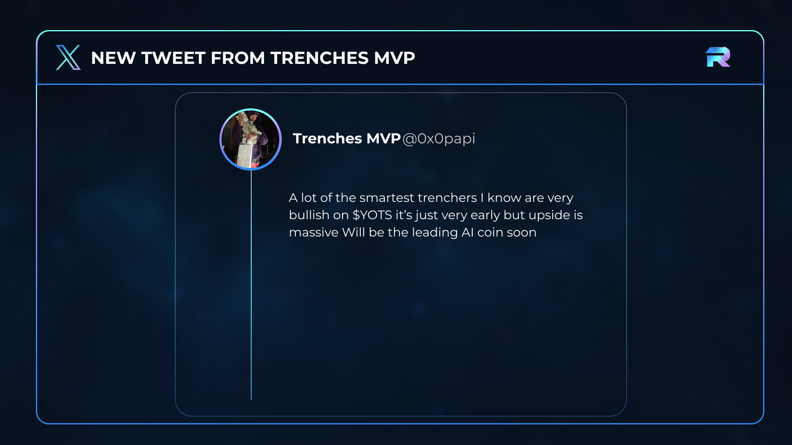
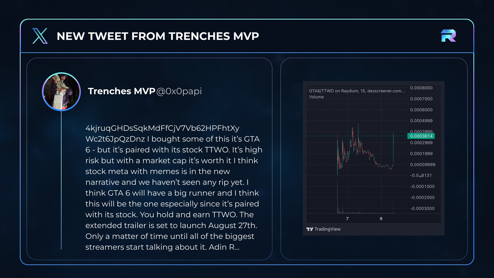

CryptoGodJohn's 3 Meme Coins for the Next Cycle

CryptoGodJohn is back in meme coins, with MANIFEST as the culture bet, YOTS as the AI and Elon bet, and GTA6 as his newest gaming and meme-stock thesis.
Each coin gives Ben a different attention narrative to unpack, while John's recent posts explain why people are watching what he moves into next.
0x0papi is John's alt. The large Rubicon Influencer Feed renders below are John's source posts, shown directly beside the public tweets Ben can open.
Opening
CryptoGodJohn is properly back in meme coins, and his latest three are chasing completely different types of attention. MANIFEST is the culture coin, YOTS is the AI and Elon coin, and the newest one is trying to combine GTA6 hype with a meme-stock narrative.
Your browser may ask for popup permission. The first source opens immediately, then the rest open in order.

Post 2086903386004230205 says "This is going to print millions" and carries this three-position attachment.
Culture. AI and Elon. Gaming plus meme stocks.
What John is posting now, what each narrative is, and what the public charts did after the early posts.
Why people watch John
LINK built the reputation, 0x0 repeated the exact motif, and MAGA is the recent bridge into this video.

"$LINK you will change my life forever... I can come back to it in 2020-2021." John later described the call as 360x.
The 0x0 post uses the same wording, changes the return date to 2024-2025, and directly quotes the original LINK status.
The full public chart is ready in Arc.
After the timestamped post, before reversing.
John built his reputation on the LINK call, later made the same life-changing prediction for 0x0, and this year put MAGA beside those older conviction plays. That is why people are watching his next three now.
Source notes for Why John
MANIFEST
John's bet that an existing belief and daily behaviour can become a lasting crypto culture.

He said manifesting positivity speaks his language, disclosed a bag, and called it a main meme holding moving forward.
Manifestation is already a recognisable belief and shareable behaviour. The token is trying to turn that into a culture coin.
The public pool later touched that high, then pulled back. John returned to the thesis in August and said he was buying more below $10M.
Source notes for MANIFEST
YOTS
Year of the Singularity, Elon lore, and John's comparison with the early AI-agent meme cycle.

He said he aped a bag, thought the Elon lore could be massive, compared it with early GOAT and ZERBRO, and later called it a prospective leading AI coin.
Elon's "year of the Singularity" phrase gives it the hook. The project wraps that in an AI-agent world and on-chain lore.
Roughly 26 hours after the public post, the same pool briefly touched the later level before pulling back.
Source notes for YOTS
The Influencer Feed is the bridge
When someone like CryptoGodJohn posts a coin, most people only see the headline after it has already spread across X. Inside our paid Inner Circle, the Influencer Feed brings his public posts, updates from his @0x0papi alt, exact-token matches, and chart context into one place while the story is still developing.
If you want the same research feed I am using here, join the Inner Circle through the link below.
GTA6
The freshest pick combines one of the world's biggest game releases with a meme-stock and tokenized-TTWO angle.

On @0x0papi he said he bought GTA6 and highlighted the GTA plus TTWO pairing. Publicly, he repeated the exact thesis and later called it one of his biggest coming-month plays.
GTA6 attention plus a meme-stock narrative. The token project says qualifying holders receive fee distributions in tokenized TTWO.
The exact pool later traded above the second level before pulling back.
Rockstar's official GTA VI page promotes an Extended Look on August 27 at 3 PM ET and a November 19, 2026 release.
The meme token is independent from Rockstar and Take-Two.
Source notes for GTA6
John is back, these are the three stories he is pushing now, and GTA6 shows how quickly his list can change when a fresh narrative appears.
Producer appendix, backup research, and handoff files
The hosted Arc deck is deliberately limited to 16 useful tabs. It opens on John's full current-three post, then moves through the original LINK and 0x0 posts, the requested 0x0 and MAGA charts, each selected-token block, and the official GTA6 catalyst. Backup research remains outside the recording order.